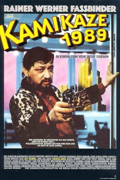

Wolf Gremm
1982
106 minutes
TITLE: Kamikaze 1989 TEXT PLACEHOLDER 028
You were lucky enough to see this on the big screen with your belated wife (sorry for your loss), and to your amazement it ended up being her second-favorite German film. Even after knowing her for more than a decade, you didn't figure on her even enjoying something quite this weird starring Rainer Werner Fassbinder. And, as it would turn out, her favorite German film would be the Fassbinder-directed film The Bitter Tears of Petra von Kant. (Her favorite French film turned out to be Godard's Alphaville starring Eddie Constantine as Lemmy Caution, and it makes you sad that you never got to watch Constantine playing "himself" in the Fassbinder-directed Beware of a Holy Whore in Section 250, which would have blown her mind.)
But enough about the past. You didn't start reading this book to bask in memories of films you've watched and connections between them and random thoughts and memories they dredge to the surface. You came for the visceral experience of watching movies. Or at least the visceral experience of reading about watching movies. And you're here because you baffled Google's AI assistant by asking it to recommend you something you'd like if you enjoy Kafka and comic books but you're also kind of in the mood for Miami Vice and AI just shrugged and gave up but some guy was looking over your shoulder and said, "Hey, I got just the movie for you...how do you feel about leopard-print? Do the cops have to be ruggedly handsome?" And next thing you know you're watching this and laughing along with Little Rita and trying to figure out exactly what being a crysmopompas entails.
Just go with it.
Time to choose something different: